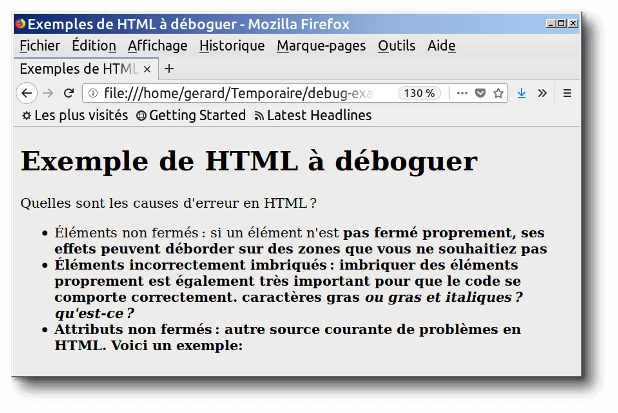

L'HyperText Markup Language, HTML, désigne un type de langage informatique descriptif.
Il s'agit plus précisément d'un format de données utilisé dans l'univers d'Internet pour la mise en forme des pages Web.
Il permet, entre autres, d'écrire de l'hypertexte, mais aussi d'introduire des ressources multimédias dans un contenu
NAISSANCE DU HTML
1989-1992 : Origine. HTML est une des trois inventions à la base du World Wide Web,
avec le Hypertext Transfer Protocol (HTTP) et les adresses web (URL).
HTML a été inventé pour permettre d'écrire des documents hypertextuels
liant les différentes ressources d'Internet avec des hyperliens.

SON UTILITÉ
Le HTML sert à structurer la page. Il indique aux crawlers comment
ils doivent comprendre la page et quels éléments elle contient.
Le CSS contient la feuille de style de la page.
Les indications qu'il donne concernent exclusivement le design
et l'apparence des éléments de la page.
LES DIFFÉRENTS EXEMPLES DE LIGNES DE CODE EN HTML
BALISES DE PREMIER NIVEAU:
Ces balises sont indispensables pour pouvoir commencer à coder une page web en HTML.
Elles vont permettre d’indiquer aux différents navigateurs Web qu’il s’agit de pages en HTML et de séparer l’en-tête du corps de la page.
<html> – </html> : balise principale de toutes les pages web.
<head> – </head> : en-tête de la page
<body> – </body> : corps de la page
BALISES D’EN-TETE:
Ces balises sont toutes situées dans l’en-tête de la page Web,
c’est-à-dire entre la balise <head> et la balise </head>.
Vous remarquerez que quand un contenu se situe entre deux balises html, la deuxième est quasi-identique à la première à ceci près qu’il s’agit d’une balise fermante.
Une balise fermante reprend la balise d’ouverture en y ajoutant un slash (/) avant l’intitulé de la balise et après le signe inférieur (<).
Comme ici avec le <head> qui est la balise d’ouverture et le </head> qui est la balise de fermeture.
Certaines balises sont dites auto-fermantes (comme la balise image (img)) par exemple.
<link /> : liaison avec une feuille de style
<meta /> : métadonnées de la page web (charset, mots-clés,
c’est aussi parmi ces balises que l’on retrouve la balise meta description que nous avons
déjà abordé sur ce blog pour vous en présenter les intérêts en matière de référencement naturel, même si cette dernière, rappelons-le pour nos fidèles amis lecteurs du SEO,
n’est pas directement interprétée par l’algorithme du moteur de recherche de Google…)
<script> – </script>: code JavaScript
<style> – </style> : code CSS
<title> – </title> : titre de la page. La fameuse balise title ! Comme indiqué à de nombreuses reprises,
renseignez bien cette balise. Elle est très importante pour le référencement naturel !
Même si actuellement vous en êtes à réfléchir quant à savoir comment vous devez coder un site Web,
que ce soit votre futur site personnel ou celui d’une société ou association pour laquelle vous travaillez,
vous allez voir, le SEO va en théorie vite devenir un sujet qui va attirer toute votre attention.
BALISES DE STRUCTURATION DU TEXTE:
Ces balises permettent de disposer des blocs dans la page contenant du texte, des images ou encore des menus.
<abbr> – </abbr> : abréviation
<blockquote> – </blockquote> : citation longue
<q> – </q> : citation courte
<cite> – </cite> : citation du titre d’une œuvre ou d’un événement
<sub> – </sub> : mise en indice
<sup> – </sup> : mise en exposant
<h1> – <h6> : titre de différents niveaux
<img /> : image grâce aux attributs src (adresse de l’image) et alt (texte de remplacement)
<mark> – </mar> : mise en valeur visuelle (le texte est surligné)
<strong> – </strong> : mise en valeur forte (le texte est en gras)
<em> – </em> : mise en valeur faible (le texte est en italique)
<figure> – </figure> : figure (image, code…)
<figcaption>> – </figcaption> : description de la figure
<audio> – </audio> : son
<video> – </video> : vidéo
<source> – </source> : indique un format possible pour les balises <audio> et <video>
<a> – </a> : lien hypertexte grâce à l’attribut href.
<br /> : retour à la ligne
<p> – </p>: paragraphe
<hr /> : ligne de séparation horizontale
<address> – </adresss : adresse de contact
<del> – </del> : texte supprimé
<ins> – </ins> : texte inséré
<dfn> – </dfn> : définition
<kbd> – </kbd> : indiquer un code que doit taper le visiteur
<progress> – </progress> : barre de progression
<time> – </time> : date ou heure
<pre> – </pre> : le texte à l’intérieur de la balise sera sous forme de code
BALISES DE LISTES:
Ces balises permettent de créer des listes (numérotées, à puces…).
<ul> – </ul>: liste à puces, non numérotée
<ol> – </ol> : liste numérotée
<li> – </li>: élément de la liste à puces
<dl> – </dl> : liste de définitions
<dt> – </dt> : définition du terme
Balises de tableau
Ces balises ont pour but de créer un tableau structuré avec des lignes et des colonnes.
<table> – </table> : tableau
<caption> – </caption> : titre du tableau
<tr> – </tr>: ligne de tableau
<th> – </th> : cellule d’en-tête
<td> – </td> : cellule
<thead> </thead> : section de l’en-tête du tableau
<tbody> – </tbody> : section du corps du tableau
<tfoot> – </tfoot> : section du pied du tableau
BALISES DE FORMULAIRE:
Ces balises permettent de créer des formulaires de contact par exemple.
<form> – </form> : délimite un formulaire (method : indique la méthode d’envoi du formulaire (get ou post).
Si vous ne savez pas quoi utiliser, mettez post / action : la page vers laquelle le visiteur doit être redirigé lorsqu’il a validé votre formulaire. )
<fieldset> – </fieldset> : permet de regrouper plusieurs éléments d’un formulaire
<legend> – </legend> : titre d’un groupe dans un formulaire
<label> – </label> : titre d’un élément de formulaire
<input /> : champ de formulaire grâce à l’attribut type
<textarea> – </textarea> : zone de saisie multiligne grâce aux attributs rows et cols (nombre de lignes et de colonnes)
<select> – </select> : liste déroulante
<option> – </option> : élément d’une liste déroulante
<optgroup> – </optgroup> : groupe d’éléments d’une liste déroulante
BALISES SECTIONNANTES:
Ces balises nous sert à construire les éléments de base d’un site web.
<header> – </header> : en-tête
<nav> – </nav>: liens principaux de navigation
<footer> – </footer> : pied de page
<section> – </section> : section de page
<article> – </article> : article (contenu autonome)
<aside> – </aside> : informations complémentaires
BALISES GENERIQUES:
Il y a deux balises génériques : l’une est inline, l’autre est block. Elles n’ont pas de sens sémantique.
<span> – </span> : balise générique de type inline
Autorise les autres éléments à venir s’asseoir à gauche et à droite.
Ne se redimensionne pas avec width et height.
Respecte les marges gauches et droites, mais pas les marges haut et bas.
<div> – </div> : balise générique de type block
Force un passage à la ligne.
Ne tolère pas d’élément à gauche ou à droite.
Se redimensionne avec width et height.
Respecte toutes les marges.
ATTRIBUTS DES BALISES GENERIQUES:
Ces balises ont un intérêt uniquement si vous leur associez un attribut class, id ou style:
class: indique le nom de la classe CSS à utiliser.
id: donne un nom à la balise. Ce nom doit être unique sur toute la page car il permet d’identifier la balise.
Vous pouvez vous servir de l’ID pour de nombreuses choses, par exemple pour créer un lien vers une ancre, pour un style CSS de type ID,
pour des manipulations en JavaScript, etc.
style: cet attribut vous permet d’écrire directement le code CSS à appliquer dans le code HTML.
Cependant, il est préférable de ne pas utiliser cet attribut et de passer à la place par une feuille de style externe,
car cela rend votre site plus facile à mettre à jour par la suite.
Testez chacune des balises pour voir le résultat concret. Les balises sont le squelette du HTML. Et bien entendu, sans squelette,
rien ne tient et par conséquent la page web s’effondre. Vous ne pourrez jamais faire sans. Faites bien attention à fermer les balises !
En un rien de temps, vous deviendrez un vrai professionnel du développement web en HTML.
Il ne vous restera alors plus qu’à maîtriser le CSS pour donner à vos fichiers HTML la forme que vous souhaitez.
Dernier petit conseil pour la route : veillez à bien indenter votre code pour y voir plus clair sinon vous serez vite perdu.